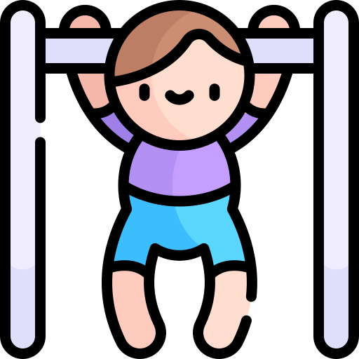
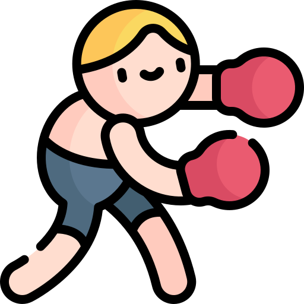
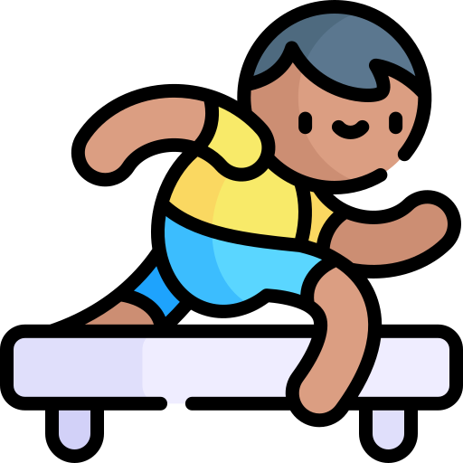
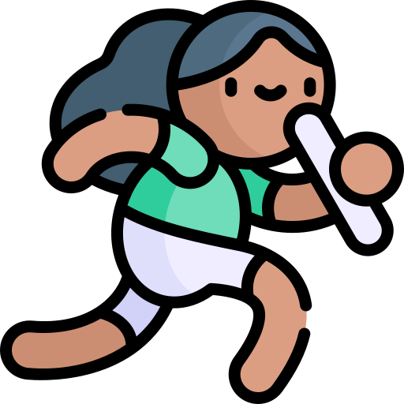
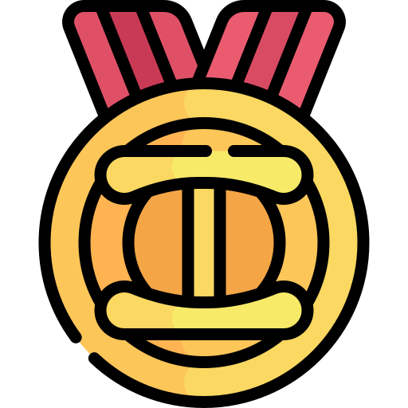

Annonymous monkey:
Здравейте. Имам въпрос относно домашното. Когато имаме ефект за увеличаване на звука, трябва ли да гледаме границата?

Ivan Ivanov
Тези, които карат ИД практикум задължително ще решават допълнителна задача. За останалите е по решение на изпитващия.
Anonymous monkey:
Защитите общодостъпни ли са, мога ли ако съм от ИС да ида утре на някоя защита на ИНФ, за да видя горе-долу как протича?

Anonymous elephant:
Кога ще излезе разпределението на защитите за ИС?
Ivan Ivanov
След няколко минутки ще получите имейл с разпределението.

Anonymous donkey:
Здравейте,
Желая да попитам има ли яснота кога ще излезнат датите за домашното и защитата по ООП за специалност Информатика?

Anonymous cat:
Следете сайта на ФМИ за датите за поправителната сесия. Домашното ще е някъде до средата на август
Ivan Ivanov
а проекта за поправителната сесия същия ли си остава като този който сме избрали и започнали през редовната
Anonymous panda:
Да. Има и възможност да го смените с друг, но трябва да се договорим за което.
 Въпроси ООП
Въпроси ООП Уеб технологии - 2024
Уеб технологии - 2024